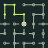
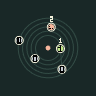

Android beta
STMPCK
A collection of small offline games for the pleasure of playing. Pick a game, choose how intense it looks, and make yourself at home.
STMPCK (pronounced “stimpack”) is designed primarily for neurodivergent people and welcomes everyone. We’re looking for beta testers to try it and tell us how it feels.
Open the downloaded file on your phone and follow Android’s installation prompts.



Tell us how it plays
What did you want to keep playing? What felt hard to see or control? If something broke, tell us what happened, what you expected, and which phone and Android version you used.
Share beta feedback on GitHub. Issues are public.